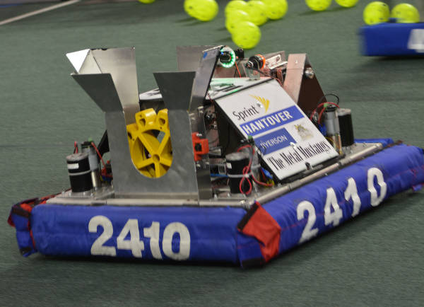
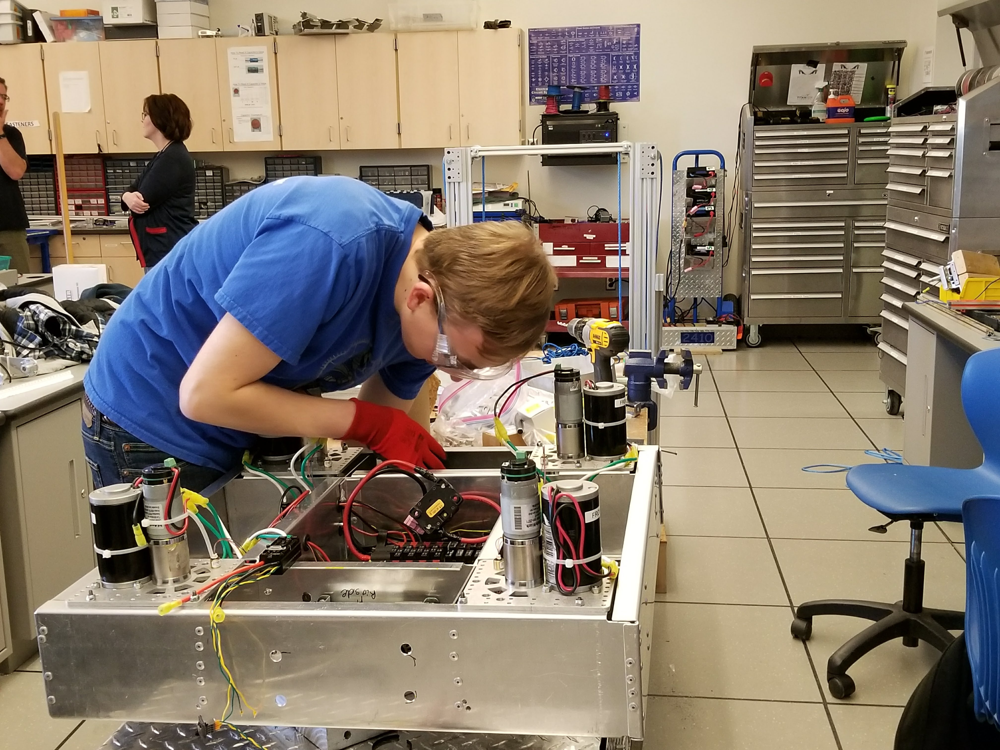
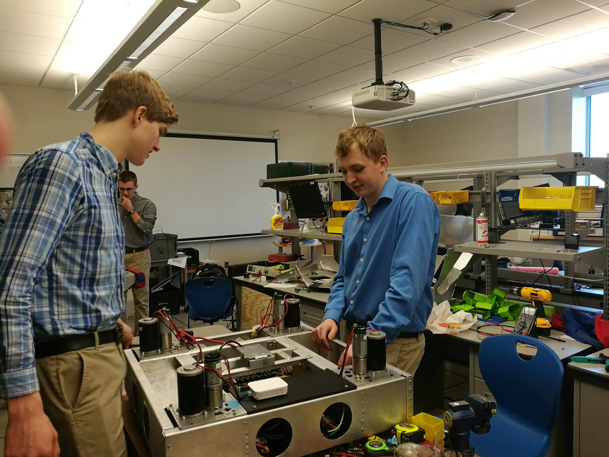
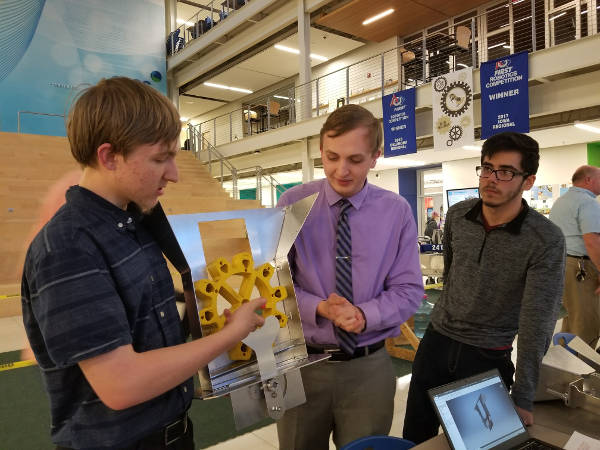
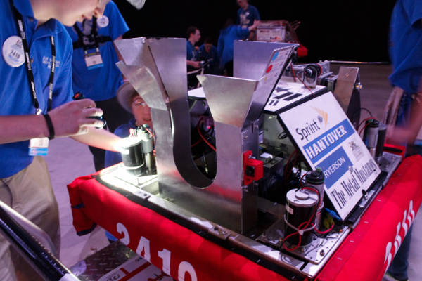

Contents
- FIRST Robotics Competition Overview
- 2017 Competition
- My Role
- Robot in Action
- Documentation and Details
- Conclusion
Silver was a robot created during the 2017 FRC build season. I worked as the Electrical lead and also took on mechanical design and build aspects of the robot.


FIRST Robotics Competition Overview
FIRST Robotics is a K-12 program where students learn engineering, technology, and teamwork skills through robotics. FRC is the highest level in FIRST and participants are High School students.
Every year there is a new game (accompanied by a 100+ page rule book, a fun read) released at the same time globally. Teams then have six weeks before bag day to design, build, and test their robot. In FRC, teams build metal bots weighing around 140 lbs.
At the Regionals, there are a number of qualification matches where three teams are put into an alliance, and two alliances play a match against each other. After qualifications, there are elimination matches, where the top eight teams get to choose their alliance.
2017 Competition
The 2017 FRC Competition was Steamworks. There were three ways to score during the match: delivering “gears” to a tower (via dropping it off on a lift with a peg), shooting balls into a boiler, and by performing an end match climb.
The first stage of each round was an Autonomous stage, where the robot would drive itself. Our robot could deliver a gear to all three tower positions using vision tracking.
My Role
During the 2017 robotics season, I acted as the Electrical Lead. I was in charge of the electrical portions of the robot and worked closely with programmers to integrate robot sensors into our driving functions.
My tasks included:
- Wiring and Cable Management - I led the electrical sub-team through wiring the four robots our team built over the 2017 build season. I ensured connections were secure and correct. I also helped revamp how my team did cable management on the robots.
- Mentoring - I taught other members of the team about robot electrical. This included general understanding of electricity, robot electrical component knowledge, sensor selection, and troubleshooting skills.
- Sensor Selection - I led the efforts to select sensors for use on the robot. This included sonar sensors, limit switches, gyros, and absolute encoders for use on our drive train (for monitoring wheel orientation).
- Troubleshooting - I troubleshooted a variety of tricky electrical problems on the robot. I spent a lot of time troubleshooting the robot CAN bus and the absolute encoders used on the wheel modules.
- Integration with Software - I worked with programmers to help them use the sensors on the robot effectively, especially during the autonomous period.
- Drive Coach - I managed pre-match strategy meetings and helped the drivers and human players make strategic decisions during matches.
Robot in Action
 Photos of Silver performing an end match climb.
Photos of Silver performing an end match climb.

Silver receiving a gear from the loading station.

Silver delivering a gear during a match.
Documentation and Details

Here is me installing a battery holder into the robot.

I am talking with another team member about layouts for electrical components on the robot.

I am explaining a gear holder that I designed with a partner.

I am performing a prematch inspection on the robot. I am checking electrical connections as well as the condition of parts on the swerve modules - specifically the lock collars and shaft keys.